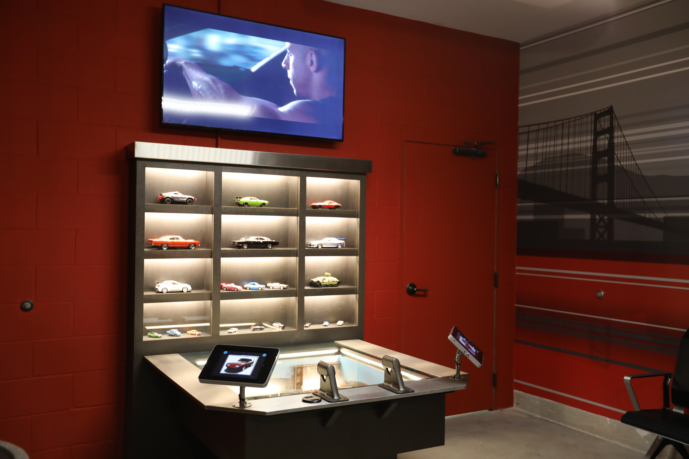

Assist in the development of the Fast & Furious tablet mini-games to be implemented as one of the interactive elements at the Fast & Furious: Supercharged attraction Childswap Room, a holding area for families with children or other individuals who are unable to experience the attraction to wait together for the rest of their party. Childswap Rooms often only have seating and a looping video of the attraction intellectual property playing - something deemed as not very entertaining for those who most frequently occupy this space.
This is the first of its kind Childswap implementation at Universal Orlando Resort when Fast & Furious: Supercharged opened in April 2018.
Three mini-games are available to play on this park-installed tablet: a coloring game, a matching game, and a puzzle game. The games were designed for 3-6 years old guests who may not be tall enough to ride the attraction, which has a minimum height requirement of 40 inches (102 cm). The team determined that 3 games would provide enough variety to occupy the user for 1 or 2 cycles of the ride.
The Main Menu for the mini-games had the same look and feel as several elements in the attraction, but was presented in a more playful way. Besides the title, no other text is used throughout the entire product. Instead, we decided to use looping animated sprites that briefly showcased each mini-game so that it could be easy for anyone, including children unable to read, to know what to expect. The buttons for each game is also larger than your average tablet button so that the games can be easily accessed even with clumsier fingers. The games reset to the main menu after being idle for a set period of time.
Different IP-approved cars can be colored in the coloring game by touching the spaces desired to be filled in using the selected color at the bottom of the screen. These images are randomized and reset every time the mini-game is launched from the main menu. Modifications to the images has to be made so that the tinier details of the car could be colored in without the need for precision. To maximize space for the image, the selected crayon color is highlighted in white rather than raising the selected crayon up above the others.
This is a typical matching game where the user taps 2 cards to turn them over and if they matched, they stayed turned over on the screen. 12 cards (or 6 pairs) was determined to be challenging but accomplishable.
Some test and adjust was required to make this game feel right when picking up the puzzle pieces and placing them on the board. We determined that once the hit box was close enough to the correct spot that the piece would automatically fill in and was unable to move afterwards. This allowed for more win-states and moving onto the the puzzle. When a piece was let go, it returned to its original position.
Other Universal Orlando Resort Childswap Rooms:
Fast & Furious: Supercharged Childswap Room Comparison:
This game was very well received by Childswap Room users based on feedback provided to the team from our Park Operations group. It was a very rewarding experience to be a part of creating an interactive game related to the attraction for those who could not actually ride the attraction themselves since the Childswap Room is often of low priority when designing attractions. I also learned a lot from fellow designers and developers when ideating how to make the experience child-friendly. I hope that in the future, more Childswap Rooms can follow similar footsteps.